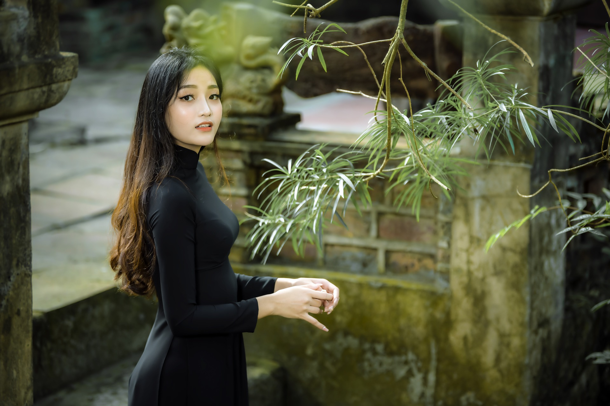

Unser KAMIKAZE Team
Ich bin Sonya Chau, Inhaberin des Massagestudios "Kamikaze". Mein ganzes Team und ich bieten dir thailändische Massage-Qualität nach dem Ausbildungsstandard des “National Skill Standard” vom „Department of Skill Development” – Ministry of Labour, Thailand (Thailändisches Arbeitsministerium).
Überprüft und ausgezeichnet wurden wir vom Ministry of Public Health / Department of Health Service Support (Thailändisches Gesundheitsministerium).
Alle Mitarbeiterinnen haben über tausend Ausbildungsstunden an verschiedenen anerkannten Schulen wie der berühmten WatPoh Schule (in Bangkok, Thailand) absolviert. Zudem werden regelmäßig Weiterbildungs-Seminare besucht.
Gerne möchte ich dir an dieser Stelle kurz unsere talentierten Masseurinnen vorstellen:
Chitako Takamitsu
Minami Suzuko

Yao-Yun Shihong
Shoko Tanigawa
© 2022 Thaimassage-Kamikaze.de | Thaimassage & Wellness